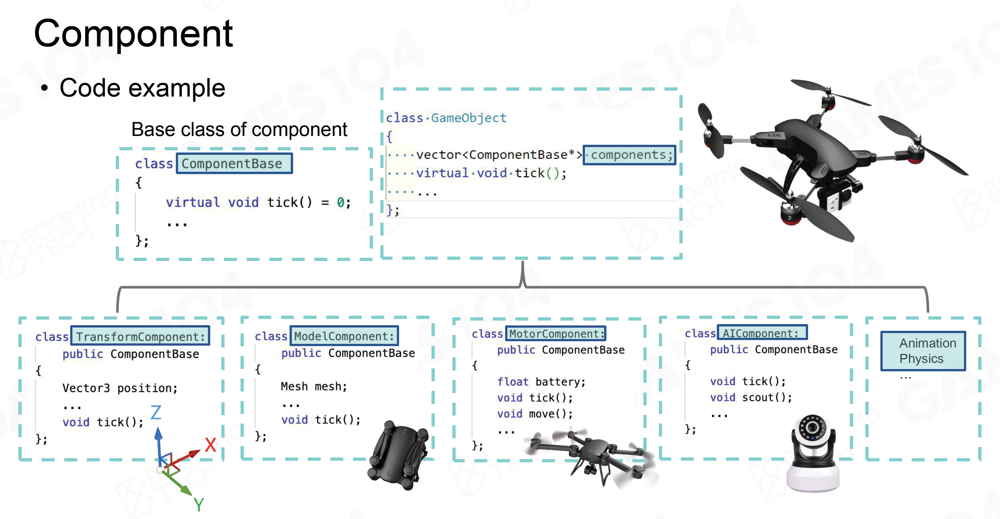

Lecture02 游戏引擎分层结构
工具层 Tool Layer 编辑器
功能层 Function Layer 渲染/模拟/玩法/交互/…
资源层 Resource Layer 数据和文件
核心层 Core Layer 内存管理/资源分配/数学模块
平台层 Platform Layer 硬件设备的调用
PS：中间件/第三方库
情景：制作一个动画角色
Resource 怎么获取数据
- Offline Importing resource -> assets
- 将resource转换为asset的文件格式
- asset读取更快
- 建构所有资产的关联关系（reference）
- GUID
- 实时/运行时（Runtime）资产管理器
- 基于路径加载/卸载asset
- 通过Handle系统管理asset的生命周期和参考
- Offline Importing resource -> assets
Function 怎么使世界动起来
- tick()
- tickLogic()
- tickRender()
- 有大量系统组成
- 必定属于引擎功能层的：渲染/模拟等
- 引擎功能层/游戏Gameplay有时有一定冲突
- 多线程
- 固定线程：不同线程作不同功能
- 主流用法，Job join：将模拟/动画等适合多线程的任务平均分配
- 原子化/任务系统：转换为一个个Job分配给所有线程
- tick()
Core
数学库
线性代数
为什么要单独写数学库 - 效率
eg. 卡马克快速平方根（牛顿迭代）
SIMD 一条指令完成四个数操作（非常适合齐次坐标运算）
数据结构
- vector / map / tree / …
- 为什么要在STL外单独写 - 效率 STL中经常有浪费内存的操作
内存管理 - 追求最高效率
- 性能的主要瓶颈
- 内存池 / 分配器
- 减少cache浪费
- 内存对齐
- PMR 多种内存资源 cache level 1 / 2 / 3 / RAM / Storage
- 优化核心思路
- 把数据放一起
- 按顺序读取数据
- 按块分配/释放内存
- 性能的主要瓶颈
Platform
- 文件系统（路径）
- 图形API
- OpenGL / Vulkan / DirectX / Metal
- RHI (Render Haraware Interface) 实现一套“API”，封装各种底层API
- 硬件架构
- PC / PlayStation / 手机 / …
- 多核逻辑（大小核）
Tool 允许他人创作游戏
- 开发相对灵活，根据用户需求，工具层的代码量和工作量可能比其他四层还大
- DCC, Asset Conditioning Pipeline 引擎工具层的编辑器和DCC的编辑器要数据通畅
为什么游戏引擎要分层
- 解耦并减少复杂度
- 上下层相互独立
- 上层不需要知道底层怎样实现
- 迎合不断变化的需求
- 上层变化大，底层较稳定
Lecture03 如何构建游戏世界
Game Object (GO) 游戏对象
- 动态游戏对象 eg.坦克、飞机…
- 静态游戏对象 eg.建筑、陈设…
- 环境 eg.场景、天空、植被（随风运动，也可以是动态游戏对象）…
- 其他对象 eg.空气墙、规则区…
以一个无人机为例
- Property 属性
- 外形
- 位置
- 血量
- 电池量
- …
- Behaviors 行为
- 运动
- 侦察
- …
class Drone {
/* Properties */
vec3 position;
float health;
float fuel;
...
/* Behavior */
void move();
void scout();
...
}拓展一个武装无人机：继承
class ArmedDrone : public Drone {
public:
float ammo;
void fire();
}游戏复杂后，没有那么清晰的从属关系——组件化

如何让世界动起来
Tick()
- 每个物体、每个组件Tick()
- 工程中，以系统为单位Tick()：Gameplay、模拟、渲染…
GO之间的交互 eg.坦克击中人
- Hardcode：坦克发射，生成新的子弹GO，逐个碰撞对象判断、处理。但工程复杂后非常难用。
- Events事件机制：用Event标记伤害，Tick()时读取Event作出响应执行回调函数 ——解耦合，可扩展的消息系统，每个component对接消息进行处理
如何管理GO
- 在场景中标记GO
- UID
- 空间位置
- 场景管理方法
- 不分割 效率低，适合小游戏
- Grid分割 适合不是特别大的游戏
- GO分布不均匀时 -> 层级结构
- BVH
- BSP Binary Space Partitioning
- 四叉/八叉树
- Scene Graph
还有很多问题…
GO的绑定 eg.人在车上时，人和车应共同移动
Event系统GO互相发消息的问题：多个消息冲突，引入中心发信机构，“邮局”
GO之间的循环依赖